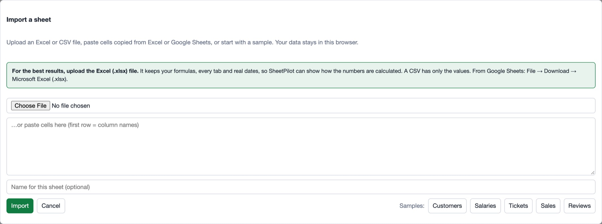
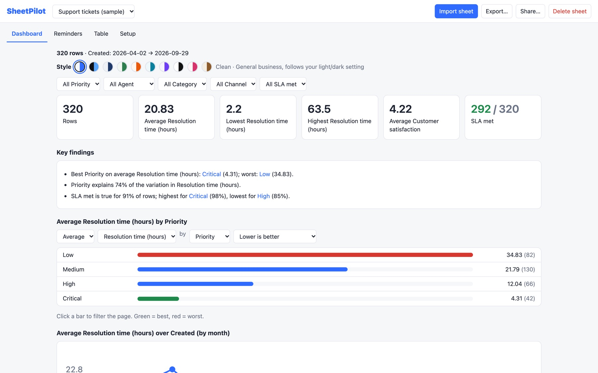

Getting started
SheetPilot turns a spreadsheet into an interactive dashboard in your browser. There is nothing to install, no account to create, and your file is never uploaded.
Open your first sheet#
- Open SheetPilot and click Import sheet.
- Choose a file, or paste cells copied from Excel or Google Sheets. No file to hand? Click one of the samples: Tickets, Sales, Reviews, Customers or Salaries.
For the best results, upload the Excel (.xlsx) file rather than a CSV. An Excel file keeps your real formulas, every tab and proper dates, so SheetPilot can show how the numbers are calculated and check them. A CSV has only the final values, so formulas have to be guessed. From Google Sheets: File → Download → Microsoft Excel (.xlsx).
- Click Import.

You land on the Dashboard tab, with a short box at the top: How I read your sheet. Check it looks right and click Looks right, or click Adjust to change anything. See How SheetPilot reads your sheet.
What you get#
- Key numbers and findings in plain language.
- A comparison chart (for example, average resolution time by priority). Click a bar to filter everything.
- A trend over time, a distribution, and a list of the rows that need attention.
- A heatmap when the sheet has scored criteria.
- A How the sheet works section with the formulas and data checks.

The four tabs#
| Tab | What it is for |
|---|---|
| Dashboard | The overview. Filter, compare, restyle (palette icon), export and share. |
| Reminders | Dates that need attention, if your sheet has follow-up or review dates. See Reminders and the table. |
| Table | Your rows, editable, with search and sorting. |
| Setup | Change how the sheet is read, and the type of each column. |
Your sheets are saved in your browser#
Imported sheets are kept in your browser's storage on this computer, so they are still there next time. They are not synced between devices. Use Export to keep a copy (see Export and share), and note that clearing your browser's site data removes them.
Next: How SheetPilot reads your sheet.
Still stuck? Check the FAQ, or ask on GitHub.